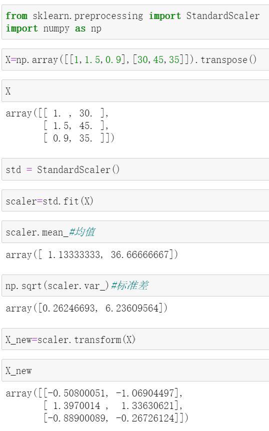
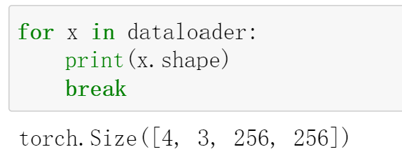
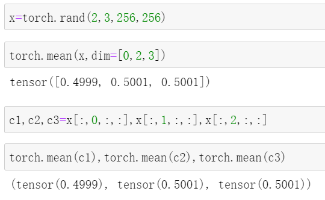
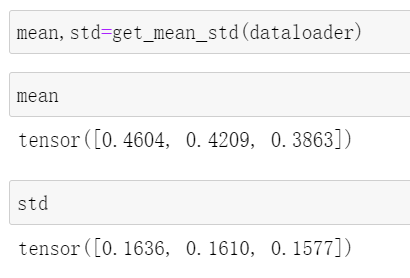
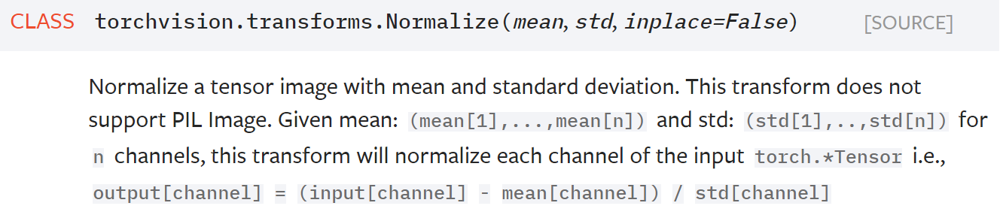

图像数据的标准化
对于一份图像数据集，在送入模型之前，往往需要做些预处理操作，标准化便是常用的一种预处理操作，它能够起到加速模型收敛的作用。
标准化公式为：
$$\frac{X-X_{mean}}{X_{std}}$$
其中，$X$是原数据集，$X_{mean}$和$X_{std}$分别代表原数据的均值和标准差。
从表格数据的标准化说起
对于表格数据，只需分别计算每列的均值和标准差即可。举个栗子，假设某数据集X如下：
| . | feature1 | feature2 |
|---|---|---|
| 样本1 | 1 | 30 |
| 样本2 | 1.5 | 45 |
| 样本3 | 0.9 | 35 |
则:
第一个特征的均值为
$$(1+1.5+0.9)/3=1.133$$
第二个特征的均值为
$$（30+45+35）/3=36.66$$
第一个特征的标准差为
$$\sqrt{[(1-1.133)^2+(1.5-1.133)^2+(0.9-1.133)^2]/3}=0.2624$$
第二个特征的标准差为
$$\sqrt{[(30-36.66)^2+(45-36.66)^2+(35-36.66)^2]/3}=6.236$$
于是，该数据集的均值为$[1.133,36.66]$，标准差为$[0.2624,6.236]$
标准化的操作如下：
$$X_{feature1}=\frac{X_{feature1}-1.133}{0.2624}$$
$$X_{feature1}=\frac{X_{feature1}-36.66}{6.236}$$
比如对于$X_{feature1}$，其值为$[1,1.5,0.9]$，那么$\frac{1-1.133}{0.2624}=-0.5068$，$\frac{1.5-1.133}{0.2624}=1.398$，$\frac{0.9-1.133}{0.2624}=-0.8879$，于是标准化后的$X_{feature1}=[-0.5068,1.398,-0.8879]$，对于$X_{feature2}$同理可计算。
计算得到标准化后的数据为：
| . | feature1 | feature2 |
| :——– | ——–:| :——: |
| 样本1 | -0.5068 | -1.06 |
| 样本2 | 1.398| 1.33 |
| 样本3 | -0.8879 | -0.26 |
不妨用sklearn来验证下计算结果的准确性：

除去舍入误差，结果是一致的。
对图像数据进行标准化
现在，我们加大难度，对具有更高维度的图像数据进行标准化。
首先自定义一份图像数据集：
1 | class MyDataset(Dataset): |
制作好数据集后，可以打印看一下：

数据集中的图像尺寸为256*256，并且已经将图片的格式转为PyTorch要求的格式：CHW.
准备好数据集之后，就可以计算整个数据集的均值和标准差了。需要明确的是，我们是分别对每个通道上的”单张图”进行均值和标准差的计算的。这里”单张图”可能描述不太严谨，举个例子吧，比如一张图片的shape为[3,256,256]，那么将dim0，也就是通道维度做切分，可以得到3个256*256 的矩阵，其中的每一个矩阵便是上面所说的”单张图”。
对于均值，直接对每个”单张图”的像素求和，再除以总的像素点个数即可
；
对于标准差，它的平方等于方差，因此需要求方差。在之前的表格数据举的栗子中，我们使用了$\frac1N\sum(X-X_{mean})^2$进行求解，而这里将使用另外一个公式，相信学过数理统计的你对它还不算陌生：
$$var(X)=E(X^2)-[{E(X)}]^2$$
现在，就可以写代码啦
1 | def get_mean_std(loader): |
比较难以理解的，应该是里面的dim=[0,2,3]。这里推荐一个方法：类比。
在前面对表格数据进行标准化时，我们是对每一个特征（每一列）求解均值和标准差。
表格数据是二维的，即”行”与”列”。我们当时的计算是按照”列”进行的，具体表现为对每一行元素进行操作。数据一共有3行，一共有2列，计算得到的均值为$[1.133,36.66]$，标准差为$[0.2624,6.236]$，它们所含元素的个数和”列”数(2)都是一样的。
推广到图像数据，数据一共有batchsize个(batchsize张图片)，每个图像的shape为[C,H,W]，在C表示的通道维度上计算均值和标准差，根据前面的类比，它具体表现为对除了通道(C)维度之外的其他维度元素进行操作，最终计算得到的均值和标准差的个数应该都和C相等。
现在再看dim=[0,2,3], 就应该明白了：它对除了第一个维度(通道维度)之外的元素进行计算，具体地，对所有元素求均值。
我们可以手动验证下：

看，两者的结果是一样的。以上便是关于dim=[0,1,2]的解释。
代码中还出现了.div(255)，也就是将图像的每个像素值都除以了255，这一操作其实是可选的，具体来说，在PyTorch中，如果你的图像在做标准化之前，已经使用了ToTensor，那么图像已经自动做了”除以255”这个操作，此时就无需在计算均值和标准差时加上.div(255)了。
最后，调用上面写好的get_mean_std函数，就可以求解均值和方差了：

看，它们所含元素个数都是3，和通道数一致。
有了均值和方差，将它们传入torchvision.transforms.Normalize就实现了图像的标准化操作。该方法会在通道维度上对每个”单张图”做标准化，正如官方给出的解释：
1 | output[channel]=(input[channel]-mean[channel])/std[channel] |

参考：